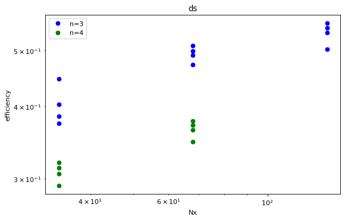

Explore the data-files in the repository and familiarize with pandas
Explore the data-files in the repository and familiarize with pandas¶
import numpy as np
import pandas as pd
import matplotlib.pyplot as plt
Make a map that assigns the total number of memory operations per element to a given algorithm
memops = {'scal':2, 'axpby':3, 'pointwiseDot':6, 'dot':2, 'dx':3, 'dy':3,'dz':3,
'arakawa':34, 'cg':51, 'ds':83}
Now, let’s read in one of the csv files (actually they are “whitespace seperated values”) and compute the bandwidth from the time measurements, vector size and the memory operations
#read in csv file
df1 = pd.read_csv('benchmark_v100nv_mpi1.csv', delimiter=' ')
#add size and get rid of non-relevant columns
df1.insert(0,'size', 8*df1['n']*df1['n']*df1['Nx']*df1['Ny']*df1['Nz']/1e6)
for name, mem in memops.items():
df1[name] = df1['size']/1000*mem/df1[name]
dfr = df1[['n','Nx','Ny','Nz','size']+list(memops.keys())]
dfr
| n | Nx | Ny | Nz | size | scal | axpby | pointwiseDot | dot | dx | dy | dz | arakawa | cg | ds | |
|---|---|---|---|---|---|---|---|---|---|---|---|---|---|---|---|
| 0 | 3 | 34 | 34 | 16 | 1.331712 | 565.098871 | 815.663472 | 994.850609 | 18.589593 | 486.771832 | 459.585042 | 565.270776 | 586.360973 | 235.847749 | 316.798019 |
| 1 | 3 | 34 | 34 | 32 | 2.663424 | 912.816119 | 1292.299033 | 675.544433 | 31.128767 | 701.571854 | 630.998586 | 846.392151 | 694.594862 | 376.351386 | 324.455509 |
| 2 | 3 | 34 | 34 | 64 | 5.326848 | 1267.241109 | 702.697863 | 734.297077 | 44.476202 | 626.926478 | 576.321979 | 637.147209 | 726.479659 | 481.203567 | 345.178187 |
| 3 | 3 | 34 | 34 | 128 | 10.653696 | 708.840533 | 758.232401 | 775.601137 | 58.219145 | 719.576914 | 662.569380 | 721.584904 | 808.996295 | 611.891793 | 346.698020 |
| 4 | 3 | 68 | 68 | 16 | 5.326848 | 1328.508634 | 700.747380 | 730.525796 | 98.461174 | 637.154830 | 566.768360 | 645.989142 | 723.435624 | 465.815601 | 395.980783 |
| ... | ... | ... | ... | ... | ... | ... | ... | ... | ... | ... | ... | ... | ... | ... | ... |
| 315 | 4 | 136 | 136 | 128 | 303.038464 | 812.203658 | 845.869714 | 815.569563 | 587.642580 | 811.094609 | 641.785895 | 490.845936 | 849.575165 | 707.081431 | NaN |
| 316 | 4 | 272 | 272 | 16 | 151.519232 | 804.942901 | 842.836421 | 818.300412 | 528.102582 | 815.363290 | 646.935659 | 502.502461 | 848.898992 | 711.141864 | NaN |
| 317 | 4 | 272 | 272 | 32 | 303.038464 | 812.433382 | 847.889305 | 817.590251 | 586.051547 | 811.478320 | 646.693597 | 491.257054 | 850.451732 | 706.570674 | NaN |
| 318 | 4 | 272 | 272 | 64 | 606.076928 | 815.403147 | 846.834918 | 813.728145 | 610.509225 | 802.417886 | 654.138677 | 490.859187 | 850.715055 | NaN | NaN |
| 319 | 4 | 272 | 272 | 128 | 1212.153856 | 813.018623 | 844.247626 | 813.565209 | 622.292310 | 786.717832 | 663.653274 | 489.922111 | NaN | NaN | NaN |
320 rows × 15 columns
We want to aggregate the results with the same input parameters n, Nx, Ny, Nz
#compute mean and standard derivation of 'same' groups
dfr=dfr.groupby(['n', 'Nx','Ny','Nz','size']).agg(['mean', 'std'])
dfr=dfr.reset_index(level=['n','Nx','Ny','Nz','size'])
dfr['axpby']
| mean | std | |
|---|---|---|
| 0 | 822.288275 | 26.684597 |
| 1 | 1306.351748 | 9.930807 |
| 2 | 701.677757 | 4.150210 |
| 3 | 760.073196 | 1.276385 |
| 4 | 704.437164 | 3.597779 |
| 5 | 761.284339 | 1.384245 |
| 6 | 801.467979 | 1.081480 |
| 7 | 824.658905 | 0.864958 |
| 8 | 801.973367 | 1.128040 |
| 9 | 823.810900 | 0.598200 |
| 10 | 836.367134 | 0.906975 |
| 11 | 843.644259 | 0.728940 |
| 12 | 835.475923 | 0.740020 |
| 13 | 844.325588 | 0.237098 |
| 14 | 847.269418 | 0.391553 |
| 15 | 845.803547 | 0.326091 |
| 16 | 1258.987023 | 60.974136 |
| 17 | 717.690971 | 5.430386 |
| 18 | 752.954371 | 2.009784 |
| 19 | 796.693538 | 1.301584 |
| 20 | 753.340264 | 1.072292 |
| 21 | 797.181766 | 0.834996 |
| 22 | 820.599640 | 1.053320 |
| 23 | 833.996542 | 0.431927 |
| 24 | 820.918715 | 1.116901 |
| 25 | 835.573021 | 0.803329 |
| 26 | 843.089319 | 0.637441 |
| 27 | 847.016833 | 0.648820 |
| 28 | 843.308846 | 0.433567 |
| 29 | 846.989057 | 0.523264 |
| 30 | 846.014008 | 0.479606 |
| 31 | 844.442969 | 0.509059 |
Here, we compute the efficiency of the operations
base_bandwidth = dfr[('axpby','mean')].iloc[15] # base bandwidth at 3 256 256 128
for name, mem in memops.items():
dfr[(name,'eff')]= dfr[(name,'mean')]/base_bandwidth
dfr[(name,'eff_err')]=dfr[(name,'std')]/base_bandwidth
#now display all bandwidth results
cols=[(m,'eff') for m in memops.keys()]
efficiency=dfr[['n','Nx','Ny','Nz','size']].join( dfr[cols])
cols=[(m,'eff_err') for m in memops.keys()]
efficiency=efficiency.join( dfr[cols])
#dfr=dfr.sort_values(by='size')
#efficiency=efficiency.set_index('size')
pd.set_option('precision',2)
efficiency=efficiency.sort_values(by='size')
#efficiency.loc[:,'size']
efficiency.iloc[0:20]
| n | Nx | Ny | Nz | size | scal | axpby | pointwiseDot | dot | dx | ... | scal | axpby | pointwiseDot | dot | dx | dy | dz | arakawa | cg | ds | |
|---|---|---|---|---|---|---|---|---|---|---|---|---|---|---|---|---|---|---|---|---|---|
| eff | eff | eff | eff | eff | ... | eff_err | eff_err | eff_err | eff_err | eff_err | eff_err | eff_err | eff_err | eff_err | eff_err | ||||||
| 0 | 3 | 34 | 34 | 16 | 1.33 | 0.67 | 0.97 | 1.16 | 0.02 | 0.59 | ... | 9.52e-03 | 3.15e-02 | 2.72e-02 | 8.96e-04 | 3.68e-02 | 3.48e-02 | 4.16e-02 | 2.44e-02 | 7.07e-03 | 1.09e-03 |
| 16 | 4 | 34 | 34 | 16 | 2.37 | 1.05 | 1.49 | 0.82 | 0.06 | 0.76 | ... | 5.03e-02 | 7.21e-02 | 4.04e-03 | 1.08e-03 | 4.10e-02 | 3.38e-02 | 5.07e-02 | 1.96e-02 | 1.04e-02 | 3.35e-03 |
| 1 | 3 | 34 | 34 | 32 | 2.66 | 1.09 | 1.54 | 0.80 | 0.04 | 0.83 | ... | 6.88e-03 | 1.17e-02 | 4.32e-03 | 1.34e-04 | 2.66e-03 | 2.06e-03 | 1.52e-02 | 1.71e-03 | 1.19e-03 | 9.24e-04 |
| 17 | 4 | 34 | 34 | 32 | 4.73 | 1.63 | 0.85 | 0.86 | 0.10 | 0.73 | ... | 7.63e-02 | 6.42e-03 | 4.02e-03 | 2.10e-03 | 1.02e-02 | 1.09e-02 | 5.82e-03 | 8.98e-03 | 9.05e-03 | 3.55e-03 |
| 2 | 3 | 34 | 34 | 64 | 5.33 | 1.50 | 0.83 | 0.87 | 0.05 | 0.74 | ... | 1.74e-02 | 4.91e-03 | 2.85e-03 | 1.06e-03 | 3.79e-03 | 3.93e-03 | 3.24e-03 | 2.89e-03 | 9.53e-03 | 8.55e-03 |
| 4 | 3 | 68 | 68 | 16 | 5.33 | 1.58 | 0.83 | 0.87 | 0.11 | 0.76 | ... | 7.86e-03 | 4.25e-03 | 4.29e-03 | 4.31e-03 | 3.37e-03 | 3.29e-03 | 4.00e-03 | 2.34e-03 | 6.19e-04 | 1.71e-03 |
| 18 | 4 | 34 | 34 | 64 | 9.47 | 0.84 | 0.89 | 0.90 | 0.19 | 0.83 | ... | 1.57e-03 | 2.38e-03 | 2.38e-03 | 3.37e-03 | 3.36e-03 | 4.24e-03 | 2.81e-03 | 2.60e-03 | 1.46e-03 | 4.64e-04 |
| 20 | 4 | 68 | 68 | 16 | 9.47 | 0.84 | 0.89 | 0.91 | 0.19 | 0.83 | ... | 5.64e-04 | 1.27e-03 | 2.07e-03 | 3.62e-04 | 1.72e-03 | 1.58e-03 | 2.51e-03 | 1.18e-03 | 3.81e-03 | 2.18e-04 |
| 3 | 3 | 34 | 34 | 128 | 10.65 | 0.84 | 0.90 | 0.91 | 0.07 | 0.85 | ... | 1.94e-03 | 1.51e-03 | 3.42e-03 | 1.09e-03 | 3.23e-03 | 5.60e-03 | 3.39e-03 | 2.34e-03 | 2.05e-03 | 1.28e-02 |
| 5 | 3 | 68 | 68 | 32 | 10.65 | 0.84 | 0.90 | 0.91 | 0.20 | 0.85 | ... | 1.39e-03 | 1.64e-03 | 2.59e-03 | 1.24e-03 | 3.05e-03 | 3.47e-03 | 3.94e-03 | 1.09e-03 | 1.25e-03 | 8.62e-04 |
| 19 | 4 | 34 | 34 | 128 | 18.94 | 0.89 | 0.94 | 0.93 | 0.30 | 0.89 | ... | 3.51e-03 | 1.54e-03 | 1.90e-03 | 7.73e-03 | 3.46e-03 | 2.67e-03 | 1.57e-03 | 8.30e-04 | 3.26e-03 | 7.32e-04 |
| 21 | 4 | 68 | 68 | 32 | 18.94 | 0.89 | 0.94 | 0.94 | 0.31 | 0.90 | ... | 2.52e-03 | 9.87e-04 | 1.99e-03 | 7.03e-04 | 3.43e-03 | 1.61e-03 | 1.77e-03 | 3.85e-04 | 7.96e-04 | 2.56e-04 |
| 8 | 3 | 136 | 136 | 16 | 21.31 | 0.90 | 0.95 | 0.94 | 0.33 | 0.91 | ... | 3.28e-03 | 1.33e-03 | 2.41e-03 | 8.94e-03 | 1.05e-03 | 2.58e-03 | 2.84e-03 | 9.49e-04 | 2.49e-03 | 1.39e-03 |
| 6 | 3 | 68 | 68 | 64 | 21.31 | 0.90 | 0.95 | 0.94 | 0.32 | 0.91 | ... | 2.59e-03 | 1.28e-03 | 1.93e-03 | 7.60e-03 | 1.47e-03 | 2.15e-03 | 2.54e-03 | 8.76e-04 | 3.24e-03 | 7.52e-04 |
| 22 | 4 | 68 | 68 | 64 | 37.88 | 0.93 | 0.97 | 0.95 | 0.44 | 0.93 | ... | 1.08e-03 | 1.25e-03 | 2.05e-03 | 1.09e-02 | 2.81e-03 | 3.05e-02 | 1.39e-03 | 2.58e-03 | 6.85e-04 | 2.92e-04 |
| 24 | 4 | 136 | 136 | 16 | 37.88 | 0.93 | 0.97 | 0.95 | 0.43 | 0.94 | ... | 2.25e-03 | 1.32e-03 | 1.05e-03 | 8.98e-03 | 1.10e-03 | 1.14e-03 | 1.01e-03 | 6.63e-04 | 5.93e-04 | NaN |
| 9 | 3 | 136 | 136 | 32 | 42.61 | 0.93 | 0.97 | 0.95 | 0.47 | 0.94 | ... | 1.12e-03 | 7.07e-04 | 1.04e-03 | 8.62e-03 | 8.72e-04 | 2.17e-03 | 2.05e-03 | 6.23e-04 | 1.08e-03 | 1.14e-03 |
| 7 | 3 | 68 | 68 | 128 | 42.61 | 0.93 | 0.98 | 0.96 | 0.43 | 0.94 | ... | 2.20e-03 | 1.02e-03 | 2.35e-03 | 1.25e-02 | 1.75e-03 | 1.65e-02 | 1.17e-03 | 1.48e-03 | 1.20e-03 | 4.71e-04 |
| 25 | 4 | 136 | 136 | 32 | 75.76 | 0.94 | 0.99 | 0.97 | 0.52 | 0.95 | ... | 7.45e-04 | 9.50e-04 | 8.76e-04 | 1.00e-02 | 2.58e-03 | 2.97e-02 | 1.32e-03 | 5.42e-03 | 6.09e-04 | NaN |
| 23 | 4 | 68 | 68 | 128 | 75.76 | 0.94 | 0.99 | 0.96 | 0.56 | 0.95 | ... | 2.11e-04 | 5.11e-04 | 1.13e-03 | 7.03e-03 | 1.04e-03 | 1.10e-03 | 1.12e-03 | 5.98e-04 | 4.75e-04 | 1.53e-04 |
20 rows × 25 columns
Let us try and make our first plot
fig=plt.figure()
#print(efficiency)
toPlot=efficiency['dy'].join(efficiency['size'])
ax = toPlot.plot(style='ro',x='size',y='eff',yerr='eff_err')
toPlot=efficiency['dx'].join(efficiency['size'])
ax = toPlot.plot(style='ro',x='size',y='eff',yerr='eff_err',ax=ax)
toPlot=efficiency['dot'].join(efficiency['size'])
ax = toPlot.plot(style='ro',x='size',y='eff',yerr='eff_err',ax=ax)
plt.xscale('log')
plt.yscale('log')
ax.legend(['dy','dx','dot'])
<matplotlib.legend.Legend at 0x7f839c9f1f10>
<Figure size 432x288 with 0 Axes>
fig,ax=plt.subplots(1,1,figsize=(8,5),dpi= 80, facecolor='w', edgecolor='k')
plotlist = [('ds','eff')]
stylelist = ['ro','bo','go','yo']
#efficiency.iloc[8:24].plot(x=('size',''),y=[('cg','eff'),('arakawa','eff')],style=['ro','bo'],logx=True)
efficiency[efficiency['n']==3].plot(ax=ax, x=('Nx',''),y=plotlist,style=stylelist[1])
efficiency[efficiency['n']==4].plot(ax=ax, x=('Nx',''),y=plotlist,style=stylelist[2])
#plt.loglog()
plt.title(plotlist[0][0])
plt.xscale('log')
plt.yscale('log')
plt.ylabel('efficiency')
plt.xlabel('Nx')
plt.legend(['n=3','n=4'])
plt.show()
#base_bandwidth
